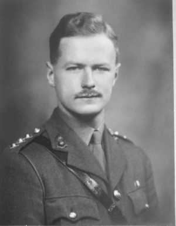
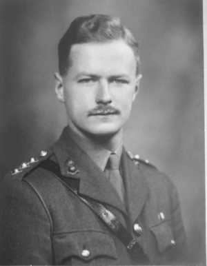

gallery

I am shown when someone hovers over the div above.


William Alfred SAVAGE
For great gallantry, skill and devotion to duty as gunlayer of the pom-pom in a motor gun boat in the St. Nazaire raid. Completely exposed, and under heavy fire he engaged positions ashore with cool and steady accuracy. On the way out of the harbour he kept up the same vigorous and accurate fire against the attacking ships, until he was killed at his gun. This Victoria Cross is awarded in recognition not only of the gallantry and devotion to duty of Able Seaman Savage, but also of the valour shown by many others, unnamed, in Motor Launches, Motor Gun Boats and Motor Torpedo Boats, who gallantly carried out their duty in entirely exposed positions against Enemy fire at very close range.


Robert Edward Dudley RYDER
For great gallantry in the attack on St. Nazaire. He commanded a force of small unprotected ships in an attack on a heavily defended port and led H.M.S. Campbeltown in under intense fire from short range weapons at point blank range. Though the main object of the expedition had been accomplished in the beaching of Campbeltown, he remained on the spot conducting operations, evacuating men from Campbeltown and dealing with strong points and close range weapons while exposed to heavy fire for one hour and sixteen minutes, and did not withdraw till it was certain that his ship could be of no use in rescuing any of the Commando Troops who were still ashore. That his Motor Gun Boat, now full of dead and wounded, should have survived and should have been able to withdraw through an intense barrage of close range fire was almost a miracle


 

Augustus Charles NEWMAN
On the night of 27th/28th March, 1942, Lieutenant-Colonel Newman was in command of the military force detailed to land on enemy occupied territory and destroy the dock installations of the German controlled naval base at St Nazaire. This important base was known to be heavily defended and bomber support had to be abandoned owing to bad weather. The operation was therefore bound to be exceedingly hazardous, but Lieutenant-Colonel Newman, although empowered to call off the assault at any stage, was determined to carry to a successful conclusion the important task which had been assigned to him. Coolly and calmly he stood on the bridge of the leading craft, as the small force steamed up the estuary of the River Loire, although the ships had been caught in the enemy searchlights and a murderous crossfire opened from both banks, causing heavy casualties. Although Lieutenant-Colonel Newman need not have landed himself, he was one of the first ashore and, during the next five hours of bitter fighting, he personally entered several houses and shot up the occupants and supervised the operations in the town, utterly regardless of his own safety, and he never wavered in his resolution to carry through the operation upon which so much depended. An enemy gun position on the roof of a U-boat pen had been causing heavy casualties to the landing craft and Lieutenant-Colonel Newman directed the fire of a mortar against this position to such effect that the gun was silenced. Still fully exposed, he then brought machine gun fire to bear on an armed trawler in the harbour, compelling it to withdraw and thus preventing many casualties in the main demolition area. Under the brilliant leadership of this officer the troops fought magnificently and held vastly superior enemy forces at bay, until the demolition parties had successfully completed their work of destruction. By this time, however, most of the landing craft had been sunk or set on fire and evacuation by sea was no longer possible. Although the main objective had been achieved, Lieutenant- Colonel Newman nevertheless was now determined to try and fight his way out into open country and so give all survivors a chance to escape. The only way out of the harbour area lay across a narrow iron bridge covered by enemy machine guns and although severely shaken by a German hand grenade, which had burst at his feet, Lieutenant-Colonel Newman personally led the charge which stormed the position and under his inspiring leadership the small force fought its way through the streets to a point near the open country, when, all ammunition expended, he and his men were finally overpowered by the enemy. The outstanding gallantry and devotion to duty of this fearless officer, his brilliant leadership and initiative, were largely responsible for the success of this perilous operation which resulted in heavy damage to the important naval base at St. Nazaire


Thomas Frank DURRANT
For great gallantry, skill and devotion to duty when in charge of a Lewis gun in H.M. Motor Launch 306 in the St Nazaire raid on the 28th March, 1942. Motor Launch 306 came under heavy fire while proceeding up the River Loire towards the port. Sergeant Durrant, in his position abaft the bridge, where he had no cover or protection, engaged enemy gun positions and searchlights on shore. During this engagement he was severely wounded in the arm but refused to leave his gun. The Motor Launch subsequently went down the river and was attacked by a German destroyer at 50-60 yards range, and often closer. In this action Sergeant Durrant continued to fire at the destroyer’s bridge with the greatest of coolness and with complete disregard of the enemy’s fire. The Motor Launch was illuminated by the enemy searchlight and Sergeant Durrant drew on himself the individual attention of the enemy guns, and was again wounded, in many places. Despite these further wounds he stayed in his exposed position, still firing his gun, although after a time only able to support himself by holding on to the gun mounting. After a running fight, the Commander of the German destroyer called on the Motor Launch to surrender. Sergeant Durrant’s answer was a further burst of fire at the destroyer’s bridge. Although now very weak he went on firing, using drums of ammunition as fast as they could be replaced. A renewed attack by the enemy vessel eventually silenced the fire of the Motor Launch but Sergeant Durrant refused to give up until the destroyer came alongside, grappled the Motor Launch and took prisoner those who remained alive. Sergeant Durrant’s gallant fight was commended by the German officers on boarding the Motor Launch. This very gallant Non-Commissioned Officer later died of the many wounds received in action.


Stephen Halden BEATTIE
For great gallantry and determination in the attack on St. Nazaire in command of H.M.S. Campbeltown. Under intense fire directed at the bridge from point blank range of about 100 yards, and in the face of the blinding glare of many searchlights, he steamed her into the lockgates and beached and scuttled her in the correct position. This Victoria Cross is awarded to Lieutenant-Commander Beattie in recognition not only of his own valour but also of that of the unnamed officers and men of a very gallant ship’s company, many of whom have not returned.